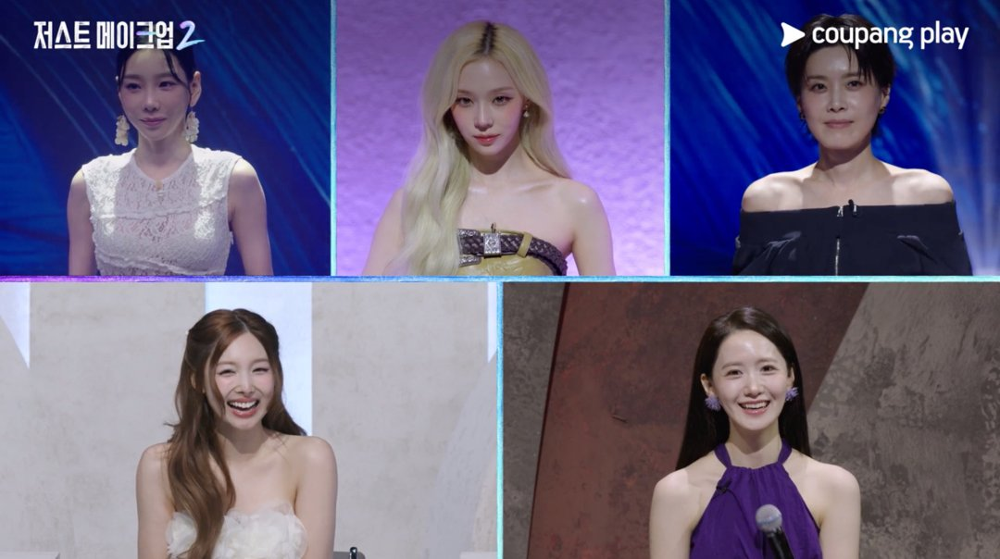
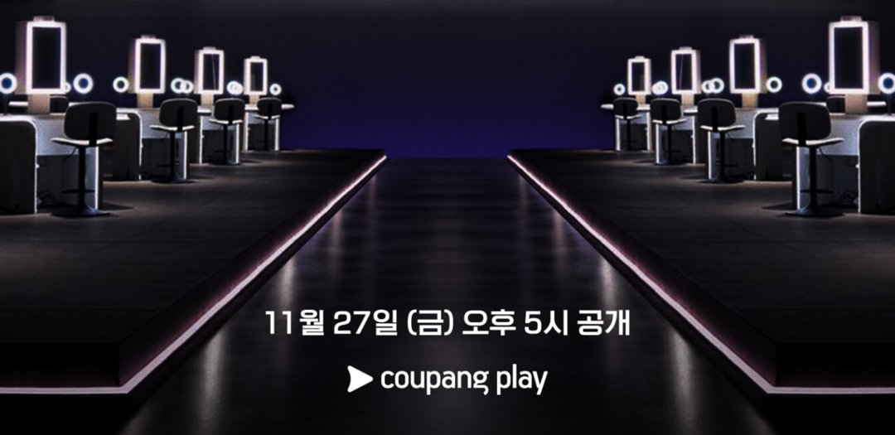
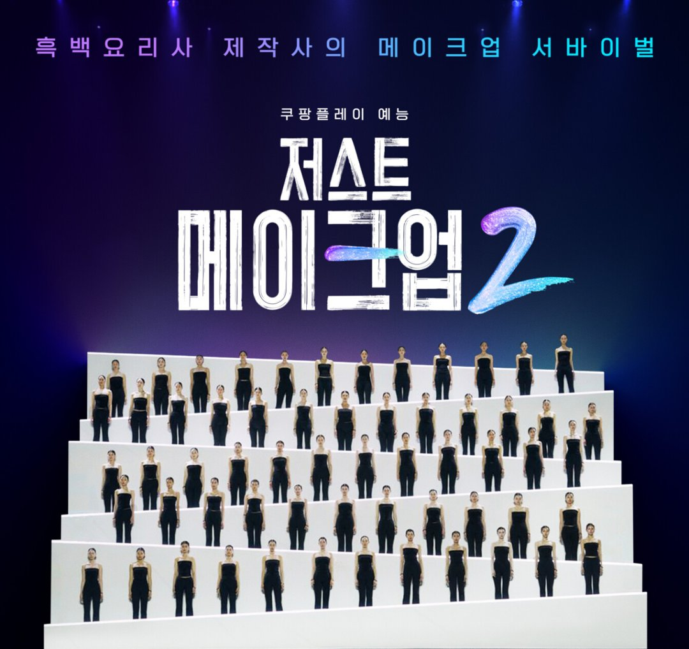

시즌1은 이효리 혼자 진행했어요. 시즌2는 다섯 명이 나눠 맡아요. 태연, 윈터, 장도연, 나연, 임윤아가 '저스트 메이크업2'의 새 얼굴이에요.
📷 사진 1 자리
▲ '저스트 메이크업2' 5MC 태연·윈터·장도연·나연·임윤아 · 사진=쿠팡플레이 제공
11월 27일 금요일 오후 5시, 쿠팡플레이
'저스트 메이크업2'는 11월 27일 오후 5시 쿠팡플레이에서 첫 공개돼요. 공식 안내 이미지에도 '11월 27일 (금) 오후 5시 공개'라고 적혀 있어요.
📷 사진 2 자리
▲ '저스트 메이크업2' 공개일 안내, 11월 27일(금) 오후 5시 · 사진=쿠팡플레이 제공
쿠팡플레이는 17일 MC 명단을 발표하면서 개별 포스터와 5MC 예고편을 함께 풀었어요. 공개일까지 열흘 남짓이라, 예고편부터 보고 첫 회를 기다려도 충분해요.
▶ 영상 1 자리
새 MC 다섯 명과 비어 있는 시즌1 자리
다섯 명 가운데 태연과 임윤아는 소녀시대 멤버예요. 같은 그룹 두 사람이 한 프로그램 진행을 함께 맡는 셈이에요. 여기에 윈터, 나연, 방송인 장도연이 합류했어요. 시즌1은 이효리 단독 진행이었으니 다섯 명 모두 이 프로그램 진행은 처음이에요.
📷 사진 3 자리
▲ '저스트 메이크업2' 태연 개별 포스터 · 사진=쿠팡플레이 제공
이효리는 이번 명단에 없어요. 제작진이 하차 이유를 따로 밝히지는 않았어요.
포스터에서는 프로그램을 상징하는 분홍색 브러시와 함께 마스카라, 립스틱, 펜슬, 퍼프, 아이라이너가 다섯 MC에게 하나씩 쥐어졌어요. 누가 어떤 도구를 들었는지 찾아보는 것도 첫 회 전 소소한 재미예요.
60명이 겨루고 4명이 심사하는 구조
'저스트 메이크업'은 국내 메이크업 아티스트들이 실력을 겨루는 서바이벌이에요. 시즌2에는 참가자 60명이 나오고 심사위원 4명이 이들을 평가해요.
📷 사진 4 자리
▲ 참가자 60명이 담긴 '저스트 메이크업2' 포스터 · 사진=쿠팡플레이 제공
참가자 규모와 공개일은 11월 13일에 먼저 발표됐고, MC 명단은 나흘 뒤인 17일에 나왔어요. 60명이 계단식 단상에 줄지어 선 단체 포스터도 이때 함께 공개됐어요.
공식 포스터에는 '흑백요리사 제작사의 메이크업 서바이벌'이라는 문구가 들어가 있어요. 요리 대결로 알려진 '흑백요리사'를 만든 쪽이 무대를 메이크업으로 옮긴 프로그램이라는 뜻이에요.
진행자가 한 명에서 다섯 명으로 늘었다는 건 시즌1과 가장 크게 달라진 대목이에요. 다섯 MC가 60명의 작품을 어떤 말로 소개하고 반응하는지가 시즌1과 비교해 볼 첫 번째 포인트로 보여요.
'저스트 메이크업2'는 태연·윈터·장도연·나연·임윤아 다섯 MC 체제로 11월 27일 금요일 오후 5시 쿠팡플레이에서 공개돼요.
함께 보면 좋은 이슈


